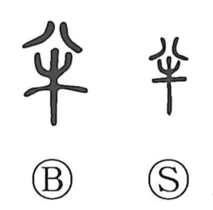

半

Kun: nakaba | On: han
half ・ to divide
Explanation
半 pictures an ox divided down the middle. 八 above indicates the separation into two parts. The early setting is the portioning of a sacrificial animal, with one side forming a half.
The related 胖 makes the flesh explicit and names a side or half-body of meat. Ritual descriptions distinguish such portions when preparing and presenting the offering. The divided animal provides a concrete measure of what belongs to one of two equal parts.
The use broadens to half of anything, a partial amount, or the middle of a process. Related 判 concerns division, while 伴 concerns a companion or paired counterpart. The familiar abstract half continues the relation first made visible in the divided offering.